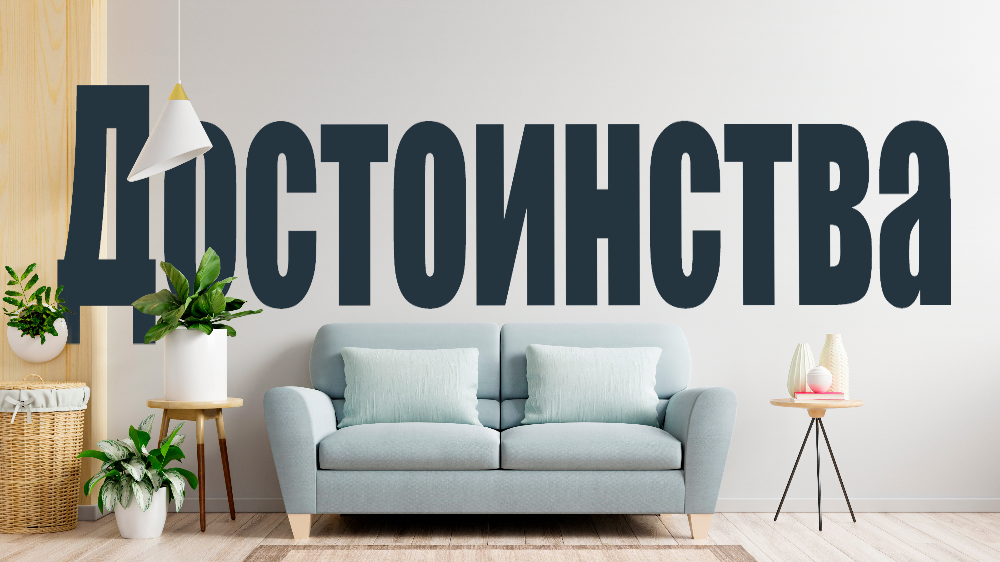
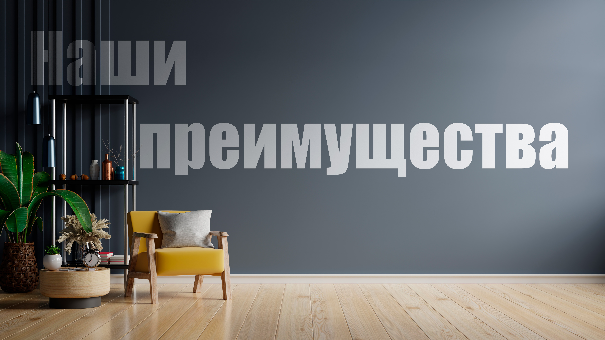
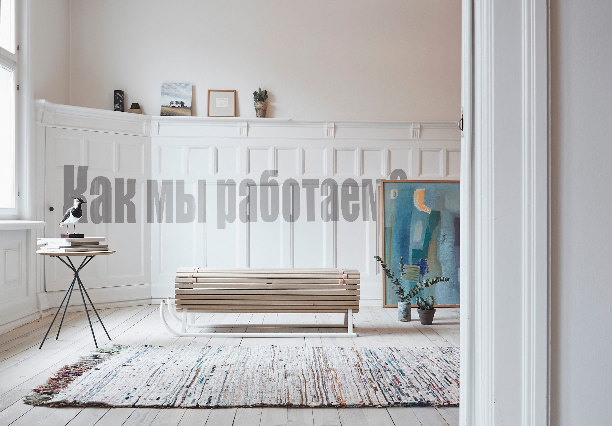

3D туры по квартире или дому гораздо действеннее, чем статичные фото и текстовое описание. За счет личного контроля над просмотром, 3D тур увеличивает прозрачность и укрепляет доверие клиентов к вашей недвижимости.
В отличие от статичных фото квартиры или дома, 3д туры создают эффект присутствия,повышают комфорт и наглядность, позволяя клиенту представлят масштаб и планировку квартиры или коттеджа. Виртуальный тур по квартире позволит вам избежать лишних расспросов о состоянии жилплощади, особенностях планировки и ремонте.
Tagrov360
Пример 3D тура
3D тур, он же панорамный тур, он же тур 360° — это набор сферических панорам, которые объединены между собой в единую логическую цепочку создающие тем самым эффект присутствия.
Каждый из вас много раз сталкивался с панорамными турами: когда смотрели Google.Карты в режиме прогулки или рассматривали 360° фото красивых мест.


- Вам будет предложен полный диапазон услуг, начиная от первичных консультаций и согласований, и заканчивая публикацией виртуальных туров в самых разных платформах.
- Мы используем самые современные инструменты, программы и технологии, внимательны к деталям и всегда стремимся превзойти себя.
- Мы не используем Flash, поэтому наши виртуальные туры можно открыть везде и на любых устройствах.
- Мы работаем по письменному договору с прозрачными расценками, которые после утверждения не изменяются ни при каких обстоятельствах.

- Вы оставляете заявку на расчет стоимости виртуального тура.
- Изучение специфики объекта, работа с планами помещения.
- Наш фотограф проводит съемку в удобное для вас время. Как правило, съемка длиться 1-2 часа.
- Мы презентуем готовый проект. Вы принимаете и оплачиваете работу.
Стоимость
Стоимость виртуального тура складывается из количества панорам (точек съемки) и дополнительных опций. Чем больше площадь демонстрируемого помещения, тем больше потребуется точек съемки. Как правило на 1 помещение площадью до 25 м2 требуется 1 панорама, в больших помещениях для усиления эффекта присутствия рекомендуем распологать панорамные точки на расстоянии 2,5 метров друг от друга
-
Эконом
500 руб. за 1 панораму при заказе от 4х до 15 панорам
-
Разрешение панорам 6000 на 3000 пикселей
-
Ретушь-отсутствует
-
Размещение тура на нашем сайте бессрочно, предоставляем ссылку для просмотра
-
-
Стандарт
1000 руб. за 1 панораму при заказе от 4х до 15 панорам
-
Разрешение панорам 11000 на 5500 пикселей
-
Ретушь незначительных дефектов интерьера
-
Размещение тура на нашем сайте бессрочно, предоставляем ссылку для просмотра
-
-
Премиум
1500 руб. за 1 панораму при заказе от 4х до 15 панорам
-
Разрешение панорам 13500 на 6750 пикселей
-
Ретушь дефектов интерьера, штатива и теней от съемочной установки
-
Размещение тура на нашем сайте бессрочно, предоставляем ссылку для просмотра
-
Свяжитесь с нами и мы произведем расчет необходимого количества панорам, при необходимости осуществим бесплатный выезд для расчета числа панорам и стоимости тура.